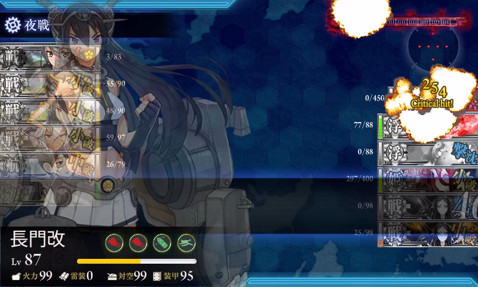
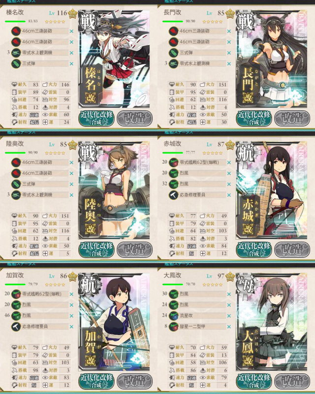
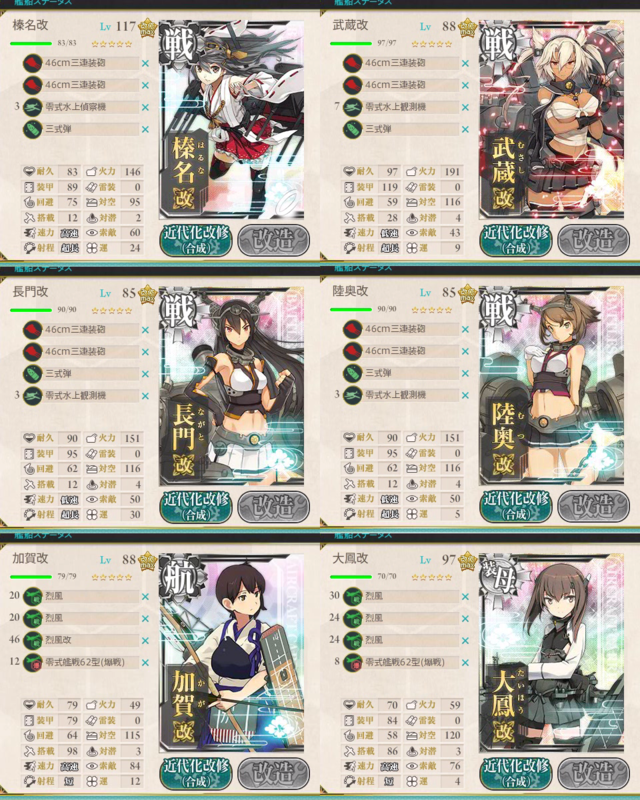
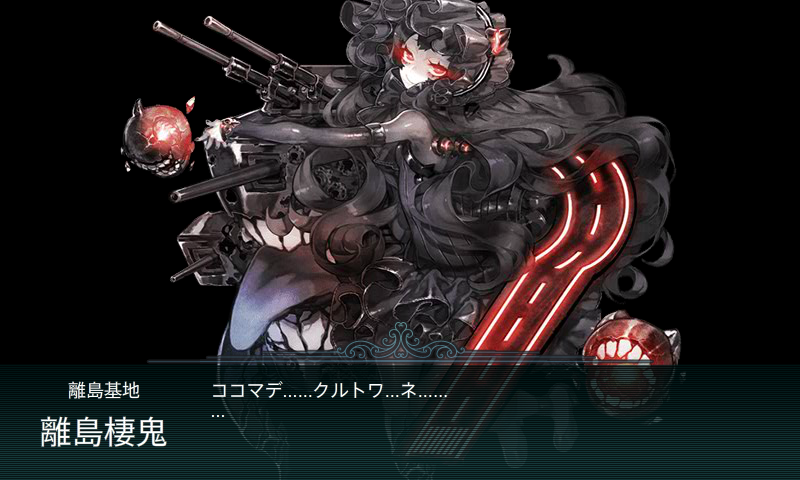
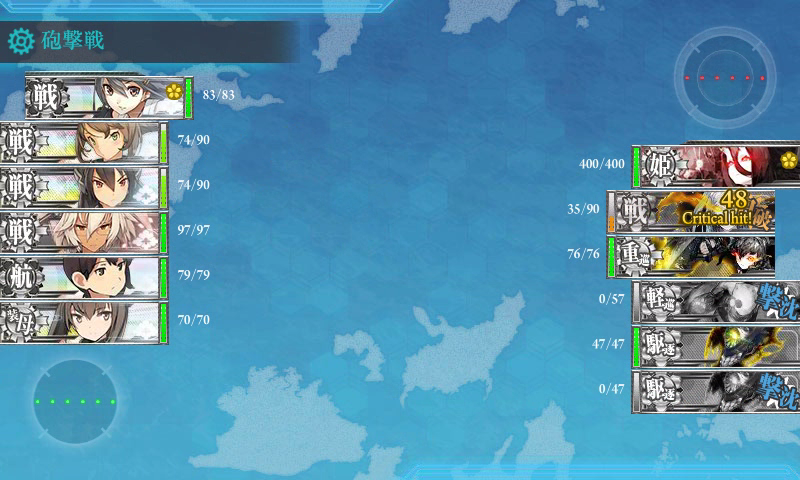
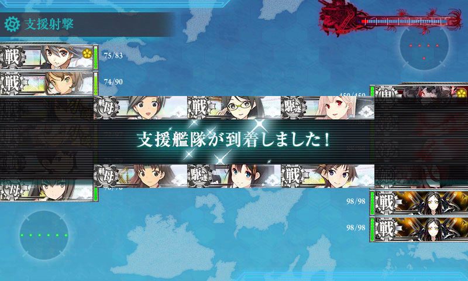
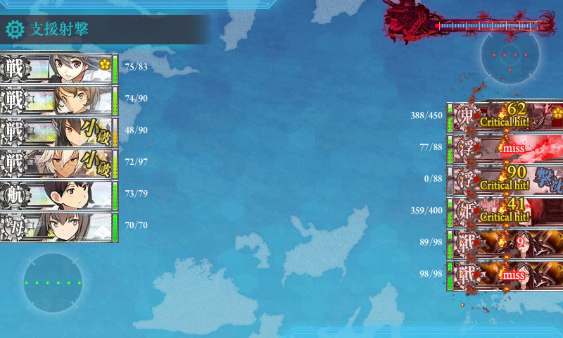
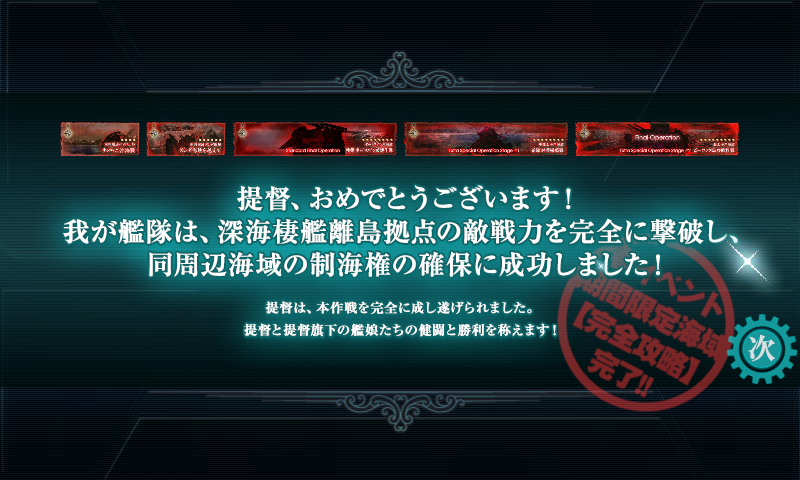
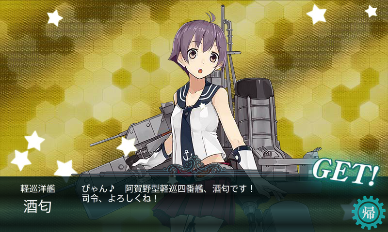

“艦隊これ”1周年記念の春イベント「索敵機、発艦始め！」、クリアしたった（漂白
公開日：

今回はゲージの回復がなかったし、ボスを外すこともなかったのでのんびりできた。さすがに E-5 は手ごたえあったけど、前回ほど絶望って感じではなかったし、禿げそうになることもなく。割りと楽しめた。
編成
今までキラつけはメンドくさい派だったけれど、今回は毎回頑張った。出撃艦隊はすべて3重に（切れたらかけ直す感じで）、支援艦隊は旗艦のみ3重に（旗艦さえ戦意高揚状態ならば支援が受けられる）。つけてもダメなときはダメ（でイヤになる）だが、つけることによって確実に BOSS 到達率は高まったように感じられる。
けずり
対空値が360ないと航空優勢がとれないっぽいので、戦3空3の編成にした。

- 戦艦「榛名」（46cm三連装砲・46cm三連装砲・零式水上観測機・三式弾）→ 戦艦「武蔵」
- 戦艦「長門」（46cm三連装砲・46cm三連装砲・零式水上観測機・三式弾）
- 戦艦「陸奥」（46cm三連装砲・46cm三連装砲・零式水上観測機・三式弾）
- 正規空母「赤城」（零式艦戦62型・烈風・烈風・ダメコン）
- 正規空母「加賀」（零式艦戦62型・烈風・烈風改・ダメコン）
- 装甲空母「大鳳」（烈風・烈風・流星改・彗星十二型甲）
「大鳳」は中破まで艦載機が飛ばせるので、ダメコンなしにして“大破したら（艦載機が飛ばせなくなったら）撤退”という方針にしたけれど、最後のスロットに彗星十二型甲をちょろっと積んでも仕方ない気がするし、代わりにダメコンでもよかったのかもしれない。
あと、戦艦3編成だと「榛名」では少し火力不足だと思ったので、3回目ぐらいで泣きながら「武蔵」にコンバートした。「武蔵」を旗艦にしておくと MVP をとるので戦意高揚状態（キラキラ）が保てる。これは割りと資材節約につながったように思う。
とどめ
けずり編成だと C 敗北を喫することが多かったので、少しでも BOSS 撃破の可能性を高めるために戦艦を増やした。

- 戦艦「榛名」（46cm三連装砲・46cm三連装砲・零式水上偵察機・三式弾）
- 戦艦「武蔵」（46cm三連装砲・46cm三連装砲・零式水上観測機・三式弾）
- 戦艦「長門」（46cm三連装砲・46cm三連装砲・零式水上観測機・三式弾）
- 戦艦「陸奥」（46cm三連装砲・46cm三連装砲・零式水上観測機・三式弾）
- 正規空母「加賀」（烈風・烈風・烈風改・零式艦戦62型）
- 装甲空母「大鳳」（烈風・烈風・烈風・零式艦戦62型）
零式水上観測機は3機しか確保できなかった（震え声
艦載機はこれでギリギリ対空値360。ダメコンを積もうかと思ったが、空母が健全ではない状態で BOSS へたどり着いても撃破は難しいかもしれない、むしろ少しでもダメージを与えられるようにするべきかと思ったので、結局積まなかった。空母は制空権確保と割り切れば積んでもよかったのかもしれない。
戦闘詳報

全20戦で突破。消費資材は燃料・弾薬各20,000程度か。
- 2戦目、大鳳大破・加賀中破で撤退。
- 2戦目、加賀大破。3戦目、加賀のダメコン発動・長門大破で撤退。
- 2戦目、加賀大破で撤退（ダメコンの積み忘れ）。
- 大鳳中破のみで BOSS 到達。打ち漏らす（249/450） A 勝利。
- 2戦目、陸奥大破で撤退。
- 大鳳中破のみで BOSS 到達、撃破。A 勝利。
- 2戦目、長門中破・陸奥大破で撤退。
- 赤城大破・加賀中破で BOSS 到達。打ち漏らす（5/450） A 勝利。
- 長門・赤城中破で BOSS 到達。打ち漏らす（192/450） A 勝利。
- （記録とり忘れ。BOSS 到達、撃破。たぶん A 勝利）
- 2戦目、大鳳大破撤退。
- 大鳳小破のみで BOSS 到達。大鳳大破で夜戦突入も、打ち漏らす（208/450） C 敗北。
- 陸奥中破のみで BOSS 到達。打ち漏らす（8/450） C 敗北。
- 2戦目、大鳳大破撤退。
- 加賀大破のみで BOSS 到達。加賀のダメコン発動。加賀・大鳳大破で夜戦突入も、打ち漏らす（104/450） C 敗北。
- 大破・中破なしで BOSS 到達。大鳳大破で夜戦突入も、打ち漏らす（327/450） A 勝利。戦艦の夜戦カットインが大鳳に入って、危うく沈めるかと思った。
- とどめ編成に切り替え。2戦目、加賀大破で撤退。
- 陸奥小破・大鳳中破のみで BOSS 到達。大鳳大破で夜戦突入も、打ち漏らす（91/450） A 勝利。
- 3戦目、加賀大破・陸奥中破で撤退。
- 長門小破のみで BOSS 到達。旗艦・榛名大破もかまわず夜戦突入。BOSS 撃破。A 勝利。
BOSS 到達率、1/2。A 勝利8回、C 敗北2回。撃破 3回。
ダメコンの利用は2回で両方とも加賀さん。加賀さん要因の撤退は4回と一番多かった。2番目は大鳳さんの3回。やっぱり空母は脆く、けずりのときはダメコンをいれたほうがいいのかもしれない（きっちりダメコンを運用できれば、あと2、3回は出撃回数を減らせた）。このマップでのダメージソースはあくまでも戦艦なので。

撤退を強いられたのは圧倒的に2戦目が多い。姫も怖いのだけど、戦艦・重巡も十分強くて、空母に当たれば甚大な被害は免れず。昼戦の早い段階で戦艦・重巡を落としてくれればかなり楽になるのだが……こればっかりは運。
反面、1戦目・3戦目はそれほどキツくなかった。当たったらよっぽど運が悪いと思ってあきらめるべし。
支援艦隊

必須。たこ焼き（浮）を1つ潰してもらえると、BOSS 撃破の可能性がぐっとあがる。

でも、編成は別に何でもいいかなーと思った。自分は 戦・戦・軽空・軽空・駆・駆 の構成で、装備は 41cm 連装砲×3＋電探 とか 彗星×4 とかその程度。駆逐艦には何を装備させたらよいかわからなかったので、10cm 砲と電探をくっつけておいた。
注意すべきなのは、旗艦をキラキラにしておくこと（キラキラじゃないときは、支援が来ない場合がある）。遠征を出し忘れないこと。これだけ。
さいごに

疲れた。

「酒匂」のレベルアップをしながら、無理しない程度に「谷風」を掘る。今回のイベントでは「初風」が3匹も釣れた（そんなにいらねー